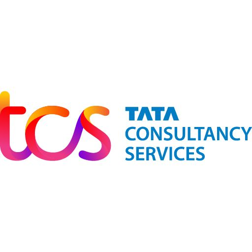

Welcome to my portfolio! I am pursuing an MS in Robotics and Autonomous Systems (Mechanical & Aerospace Engineering concentration) at Arizona State University, working with Dr. Wanxin Jin at Intelligent Robotics and Interactive Systems (IRIS) Lab.
My interests include advanced control, contact-rich simulation, and bridging sim-to-real robotic manipulation. I am actively seeking robotics opportunities focused on physics simulation and dextrous manipulation.

Research
ComFree-Sim: A GPU-Parallelized Analytical Contact Physics Engine for Scalable Contact-Rich Robotics Simulation and Control
Authors: Chetan Borse, Zhixian Xie, Wei-Cheng Huang, Wanxin Jin
Published: IROS 2026 (under review)
- Built a complementarity-free analytical contact engine for scalable contact-rich robotics simulation and control.
- Achieved high throughput in dense-contact scenes with a Warp implementation and MuJoCo-compatible interface.
Projects
Sampling Based MPC for Manipulation using ComFree-Sim
December 2025 - February 2026
- Developed sampling-based Model Predictive Control for robot manipulation tasks leveraging GPU-parallelized contact physics engine
- Demonstrated efficient trajectory optimization in contact-rich scenarios using ComFree-Sim
Generalizing Object Manipulation using Goal Conditioned Reinforcement Learning
October 2025 - December 2025
- Reproduced the key results from the original ECRL paper.
- Trained policies using a Transformer-based actor-critic architecture with entity-centric representations (Deep Latent Particles).
- Achieved state-of-the-art compositional generalization.
Enhancing Visuomotor Diffusion Policy with AdaLN-Zero
March 2025 - May 2025
- Improved the training stability of diffusion policy networks for robot trajectory generation by integrating Adaptive Layer Normalization Zero (AdaLN-Zero) into Transformer-based architectures
- Addressed training instability and high computational cost in long-horizon visuomotor tasks
Debris Detection using Swarm Robots
October 2024 - December 2024
- Designed and implemented a decentralized mapping algorithm in MATLAB for multi-robot systems to identify and localize debris in an unexplored domain
- Developed distributed map-sharing techniques enabling agents to collaboratively merge local maps into a unified global debris field map
Skills
Programming Languages
Robotics & Tools
Design & Manufacturing
Professional Experience
Design Engineer
Lycan Aerospace, Bangalore, Karnataka
- Led 3D modelling and layout optimization of structural components with systems and embedded teams.
- Produced manufacturing drawings and coordinated supplier-ready fabrication and fit checks.

TCSSystems Engineer
Tata Consultancy Services, Mumbai, Maharashtra
- Supported migration from legacy mainframe workflows to an AWS-based Java stack.
- Monitored batch jobs, generated reconciliation reports, and resolved data mismatches.